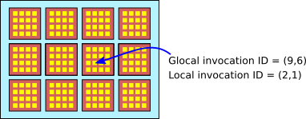

One of the major differences between WebGL and WebGPU is the addition of compute shaders. A compute shader performs a purely computational task that is not directly a part of an image rendering task (although it can produce results that will be used later for rendering). While vertex and fragment shaders are used in a render pipeline, compute shaders can only be used in another type of pipeline, called a compute pipeline. This section discusses how to create and use compute shaders and compute pipelines.
For image rendering, the draw() or drawIndexed() function is used in a render pass encoder to start processing of a render pipeline. The processing involves multiple invocations of the vertex shader entry-point function and then multiple invocations of the fragment shader entry-point. For a compute pipeline, a compute pass encoder is used, and processing is started with a call to the function dispatchWorkgroups(). I will discuss the JavaScript and WGSL code in the next subsection, but before that, you need to have some basic understanding of workgroups and what it means to dispatch them.
The job performed by a compute shader is thought of as one-, two-, or three-dimensional. This is a way to organize the work, based on the structure of the data that is processed. A job that works with an image is likely to be two-dimensional. A job that processes an array is likely to be one-dimensional. So, the invocations of a compute shader are arranged logically in a one-, two-, or three-dimension grid. Each invocation has a "global invocation ID," consisting of one, two, or three integers that give its position in the grid.
To complicate things, the invocations are broken into smaller groups called workgroups. Invocations in the same workgroup can work more closely together. For example, there is a workgroup address space that contains data shared by invocations in the same workgroup but not visible to invocations in other workgroups. The invocations in a workgroup are arranged in a grid with the same dimension as the overall job. Every invocation has a "local invocation ID" that gives its position in its workgroup. The workgroup as a whole has a size, consisting of one, two, or three integers giving its size in each dimension. All workgroups in a job have the same size. The invocations for a 2D job can be visualized something like this:

The tiny yellow squares are individual invocations of the compute shader. The workgroup size is (4,4), so each workgroup consists of a 4-by-4 grid. The local invocation ID of an invocation is a pair of numbers in the range 0 to 3. The workgroups are organized in a 4-by-3 grid. The global invocation ID is a pair (x,y) where x is in the range 0 to 15 and y is the range 0 to 11.
The structure of the invocations for a job is determined by two things: The size of an individual workgroup is specified in the WGSL source code for the shader, and the number of workgroups in each dimension of the overall job grid is specified in the call to dispatchWorkgroups() on the JavaScript side. For the example shown in the illustration, the workgroup size is (4,4), and the job would be created with a call to dispatchWorkgroups(4,3).
The number of invocations in a workgroup is limited to 256. Workgroups as small as a single invocation are allowed. However, 64 is recommended as a reasonable workgroup size in most cases, and I use that value in most of my examples.
(You might wonder why workgroups should exist at all. It has to do with the physical structure of GPUs. The processors in a typical GPU are physically divided into groups. Processors in a group are not independent; they all run the same code, and they share some local memory that they can access very quickly. It is possible that using a WebGPU workgroup size that is less than the physical size of processor groups on the GPU might leave some processors in a group with nothing to do. The performance of some programs can be optimized by making use of the physical structure of a GPU. However, I suspect that that optimization really needs to be tuned to a particular GPU structure. For a WebGPU program that is designed to run on multiple platforms, I'm not sure how much optimization can be done. In any case, such optimization is beyond my expertise, and none of my examples use workgroups in a significant way.)
My first compute shader example, webgpu/first_compute_shader.html, is a modification of earlier programs that showed colored disks moving in the canvas and bouncing off the edges. In the earlier programs, the positions of the disks were updated on the JavaScript side and then written to a buffer on the GPU. The new version moves that computation into a compute shader that runs on the GPU. This increases efficiency both because the GPU parallelizes the computation and because the new values do not have be copied to the GPU.
Working with compute pipelines is similar to working with render pipelines: Create the WGSL source code for the shader; create a compute pipeline to process the shader and create the bind groups and resources used by the pipeline; use a command encoder and compute pass encoder to assemble the commands that are needed to run the pipeline; and submit the commands to the WebGPU device queue.
In WGSL source code, the entry-point function for a compute shader is marked by the annotation @compute (in the same way that a vertex shader entry-point is annotated with @vertex). The compute shader entry-point also requires another annotation to specify the workgroup size. For example, the annotation @workgroup_size(16,8) specifies a two-dimensional workgroup with size 16 in the x direction and 8 in the y direction.
Several builtin values are available as parameters to a compute shader entry-point function. The most useful is probably @builtin(global_invocation_id), which gives the global invocation ID of the current invocation as a vec3u. For a one-dimensional task, the y and z component of the vector will be 1; for a two-dimensional problem, the z component will be 1. As far as WGSL is concerned, all problems are three-dimensional, with the sizes for missing dimensions set to 1. Here, for example, is the start of the entry-point function from the first sample program:
@compute @workgroup_size(64)
fn main( @builtin(global_invocation_id) global_id : vec3u ) { . . .
Other builtins for the compute shader include:
All of these are of type vec3u, with values for missing dimensions set to 1.
The compute shader can get input from the JavaScript side in bind groups. There is nothing like a vertex buffer to provide parameter values for the compute shader entry point function, so the only parameters will be builtins. The function also has no return type. A compute shader produces output by writing it to a storage buffer or storage texture that is part of a bind group.
In the sample program, the data for the animation consists of the positions of the moving disks and their velocities. The compute shader is run between frames of the animation to update the positions. When a disk bounces off an edge, it reverses direction, and in that case the velocity of the disk also changes. The x and y components of the positions and velocities have to be updated. The computation is the same for both components. The task for one invocation of the compute shader is to update the position and velocity of one disk in either the x or y direction. If there are N disks, we need 2*N invocations of the shader.
The positions and velocities are stored in two storage buffers, which are represented in the shader program by variables of type array<32>. Initial values are written to the buffers by the JavaScript side of the program. After that, the buffers are used entirely on the GPU side. An additional storage buffer holds an array of three floats giving other data needed for the computation: the number of disks, the radius of the disks, and the change in time since the previous update. The shader variables are declared as
@group(0) @binding(0) var<storage,read_write> diskOffsets : array<f32>; @group(0) @binding(1) var<storage,read_write> diskVelocities : array<f32>; @group(0) @binding(2) var<storage> params : array<f32,3>;
The first two arrays need read_write access since their contents will be updated. To call the shader, a pipeline and a bind group will be needed. The pipeline descriptor for a compute shader is fairly simple. It has a layout property, and a compute property to specify the shader module and shader entry point function. The pipeline itself is created with the function device.createComputePipeline(). Here is how the sample program creates the compute pipeline and a bind group that will be attached to the pipeline:
function createComputePipelineConfig() {
let pipelineDescriptor = {
compute: {
module: computeShader,
entryPoint: "main"
},
layout: "auto"
};
computePipeline = device.createComputePipeline(pipelineDescriptor);
computeBindGroup = device.createBindGroup({
layout: computePipeline.getBindGroupLayout(0),
entries: [
{ // For positions of the disks.
binding: 0,
resource: {buffer: offsetBuffer}
},
{ // For velocities of the disks.
binding: 1,
resource: {buffer: velocityBuffer}
},
{ // Other data for the computation.
binding: 2,
resource: {buffer: paramsBuffer}
}
]
});
}
The pipeline is run by a JavaScript function that is called between frames of the animation. The compute pass encoder method dispatchWorkgroups() is used to invoke the shader, with a parameter that specifies the number of workgroups. We need 2*DISK_COUNT invocations of the shader, and the size of a workgroup is 64, so we need at least (2*DISK_COUNT)/64 workgroups. Since the number of workgroups must be an integer, we need to round the number up to an integer value using Math.ceil().
/**
* Use a compute pass to update the disk positions, based on their
* velocities and the change in time since the previous animation frame.
* Velocities can also change. The parameter, dt, is the change in time.
*/
function update(dt) {
/* Write the change in time to the third position in the paramsBuffer */
device.queue.writeBuffer(paramsBuffer,8,new Float32Array([dt]));
/* Encode a compute pass that will do the work. */
let commandEncoder = device.createCommandEncoder();
let passEncoder = commandEncoder.beginComputePass();
passEncoder.setPipeline(computePipeline);
passEncoder.setBindGroup(0, computeBindGroup);
let workGroupCount = Math.ceil( (2*DISK_COUNT) / 64 );
passEncoder.dispatchWorkgroups( workGroupCount );
passEncoder.end();
/* Submit the work to the GPU device queue. */
device.queue.submit([commandEncoder.finish()]);
}
As you can see, all of this is very similar to working with render pipelines and render passes.
My second compute shader example is webgpu/life_3.html, which implements Conway's Game of Life. It is a modification of life_1.html from Subsection 9.5.5. The original version computed the new generation of the board in the fragment shader, at the same time that it was displaying the current generation. The new version moves that computation into a compute shader. The compute shader version is, if anything, less efficient than the original version—which can be taken as a reminder that fragment shaders can do computational work.
Life is naturally a two-dimensional problem, since each invocation processes one cell of a two-dimensional board. The workgroup size has two components, and dispatchWorkgroups() will need two parameters. I use (8,8) as the workgroup size, giving 64 invocations per workgroup.
This example shows, in particular, that compute shaders can work with textures. The current state of the board is stored in a texture. The new state is written to a second texture. Both textures are resources for the compute pipeline. The first, which is used for input, is a resource of type texture; the second, which is used for output, is a resource of type storage texture. A compute shader can use textureLoad() to read from a texture resource, and it can use textureStore() to write to a storage texture resource. (See Subsection 9.5.5 for information about storage textures, textureLoad(), and textureStore().) Note that a compute shader cannot use textureSample().
Here is the source code for the compute shader, omitting the details of the computation:
@group(0) @binding(0) var currentGen : texture_2d<u32>;
@group(0) @binding(1) var nextGen : texture_storage_2d<r32uint,write>;
@compute @workgroup_size(8,8)
fn main( @builtin(global_invocation_id) id: vec3u) {
let boardSize = textureDimensions(currentGen);
let cell = id.xy; // Row and column for the cell that is being processed.
if (cell.x >= boardSize.x || cell.y >= boardSize.y) {
return; // The assigned cell is outside the board.
}
let alive = textureLoad(currentGen, cell, 0).r;
.
. // (Compute new "alive" value for this cell.)
.
textureStore( nextGen, cell, vec4u(newAlive,0,0,1) );
}
When dispatching workgroups, the number of invocations that we need depends on the size of the board, which is the same as the size of the canvas. Again, we have to divide the number of invocations by the workgroup size and round up to an integer value:
/**
* Compute the next generation and copy it to the currentGeneration texture.
* (Only currentGenertion is used in the render shader.)
*/
function computeNextGeneration() {
let commandEncoder = device.createCommandEncoder();
let passEncoder = commandEncoder.beginComputePass();
passEncoder.setPipeline(computePipeline);
passEncoder.setBindGroup(0,computeBindGroup);
let workgroupCountX = Math.ceil(context.canvas.width/8);
let workgroupCountY = Math.ceil(context.canvas.height/8);
passEncoder.dispatchWorkgroups( workgroupCountX, workgroupCountY );
passEncoder.end();
commandEncoder.copyTextureToTexture( // Copy result to nextGeneration.
{ texture: nextGeneration },
{ texture: currentGeneration },
[ context.canvas.width, context.canvas.height ]
);
let commandBuffer = commandEncoder.finish();
device.queue.submit([commandBuffer]);
}
Note the call to a new function, commandEncoder.copyTextureToTexture(). This function takes three parameters, giving the source texture, the destination texture, and the size of the region to be copied. The first two parameters are objects, with optional parameters to specify the mipLevel and the top-left corner, or origin, of the region to be copied.
In the first compute shader example, the shader reads values from a buffer and writes new values back to the same buffer. In the second, two textures are used, one for input and one for output. You might wonder why we didn't use one texture and let the shader update the values in that texture. (In fact we couldn't do that with textures, since there is no way to use textureLoad() and textureStore() on the same texture, but we could solve that problem by using a storage buffer instead of a texture to hold the state of the board.) In the Life game, a shader invocation has to read the states of the cell's eight neighbors. The problem is that other invocations are writing new states for those neighbors. If they are writing the new values to same resource where old values are stored, there is no way to ensure that an invocation reads the old values of the neighbors rather than the new values. It would be nice if we could force all of the reads to be done before any of the writes are done. WebGPU has a way to do that sort of thing within a single workgroup, but it has no way to do it for a compute job as a whole. The moving disk example doesn't have this problem because each invocation of the shader works on a single element of the data array and does not depend on values being written by other invocations.
Computers are often used to do physical simulations, and many simulations can benefit from the parallelism of a GPU. The sample program webgpu/diffusion.html is a fairly simple example of what can be done. The program shows a large number of white dots moving randomly. Each dot is a pixel. The motion is a "random walk": In each time step, the particle chooses a random direction—up, down, left, or right—and moves one pixel in that direction. There are also yellow and cyan particles, which don't move. Initially, there is a line of yellow particles on the left and a line of cyan particles on the right. When a white particle hits a yellow or cyan particle, it changes color to match and stops moving. The result is a buildup of colored particles in an interesting, branching pattern. The process is interesting to watch. Here is a demo version of the program:
(The idea for this simulation is not original with me. I read about a similar simulation some time ago, though I can't remember where.)
One point of interest is the use of pseudo-random numbers in the compute shader. There is no random number generator in the WGSL shading language. But pseudo-random numbers are produced in other languages using simple mathematical formulas. Starting from an initial "seed" value, the formula produces a sequence of numbers. The sequence is completely determined by the initial seed value, but it looks statistically random. My program takes the formula from the pseudo-random number generator that used in the Java programming language. Each particle runs its own pseudo-random number generator, starting from different seed values. The seed values are created on the JavaScript side using JavaScript's Math.random() function.
The program uses two storage buffers, one holding information about each particle and one holding color information for each pixel in the canvas. Particle information includes the current seed value for the particle's random number generator, the x and y coordinates of the particle, and the particle's color. Color is encoded as an integer: 1, 2, or 3 representing white, yellow, or cyan. The color buffer also represents color as an integer code number, adding 0 as a code for black, the background color.
There are two compute shaders. For both shaders, each invocation processes one particle. The first shader does nothing for a yellow or cyan particle. For a white particle, it updates data in the particle buffer by moving the particle in a random direction, except that if it tries to move into a pixel that contains a colored particle, then the particle changes color and does not move. The shader needs access to the color buffer so that it can check whether the pixel to which the white particle wants to move already contains a colored particle. After the first shader runs, the color buffer is cleared. Then the second compute shader updates the color buffer: For each particle, it sets the color of the pixel that contains the particle to match the color of the particle.
The program also has a render shader, which is invoked once for each pixel. It consults the color buffer to determine what color should be assigned to a pixel.
I will not discuss the details of this example, but I encourage you to take a look at the source code.
In my examples so far, the compute shaders were used to process data that was used by a render shader. But some tasks are purely computational, with no visible component. There has to be some way to retrieve the output of a computational task so that it can be used on the JavaScript side of the program.
A compute shader can output data to a storage buffer. A storage buffer is typically stored in GPU memory that is not accessible to JavaScript, so we need a way to copy the contents of the buffer into memory that JavaScript can access. The solution is to use a second buffer whose usage property includes MAP_READ and COPY_DST. Such buffers are often referred to as "staging buffers." The GPU can copy data into a staging buffer, and JavaScript can then "map" that staging buffer for reading. Once JavaScript has retrieved the data from the staging buffer, it must "unmap" the buffer, because the GPU cannot access the buffer while it is mapped.
The sample program webgpu/map_buffer_for_read.html performs a simple computation on the GPU that outputs an array of floating point numbers. (The specific computation is not important here.) The program uses a storage buffer and a staging buffer, which are created like this:
buffer = device.createBuffer({
size: 4*intervals,
usage: GPUBufferUsage.STORAGE | GPUBufferUsage.COPY_SRC
});
stagingBuffer = device.createBuffer({
size: 4*intervals,
usage: GPUBufferUsage.MAP_READ | GPUBufferUsage.COPY_DST
});
The compute shader outputs to buffer, then the buffer is copied to stagingBuffer. You might wonder why we don't just add MAP_READ usage to the storage buffer. But MAP_READ can only be combined with COPY_DST. Storage buffers are meant to live in GPU memory; staging buffers are meant to live in shared memory. So, in general, a buffer can't be both.
After the compute job is submitted to the GPU, the output won't be available until the job has been completed. JavaScript must wait for that to happen before mapping the staging buffer. This type of synchroniztion is handled in WebGPU using promises (Section A.4). A staging buffer is mapped using the method mapAsync(), which returns a promise. The promise resolves when the buffer is ready to be mapped. mapAsync() is typically called using await. For example, in the sample program,
await stagingBuffer.mapAsync(GPUMapMode.READ, 0, intervals*4);
The first parameter can be either GPUMapMode.READ or GPUMapMode.WRITE. The other two parameters specify the starting point and size, in bytes, of the region in the buffer to be mapped.
Once the mapping is ready, the staging buffer method getMappedRange() can be used to view all or part of the mapped region as an ArrayBuffer. An ArrayBuffer is just a container for bytes. In the sample program, those bytes are actually an array of floats. To access the data as an array of floats, we can wrap the ArrayBuffer in a Float32Array. The sample program does that and then addes up the numbers in the array to get a final answer. Both sides of the computation are done in the following function:
async function compute() {
/* Run the compute shader and copy the output to the staging buffer. */
let commandEncoder = device.createCommandEncoder();
let passEncoder = commandEncoder.beginComputePass();
passEncoder.setPipeline(pipeline);
passEncoder.setBindGroup(0, bindGroup);
passEncoder.dispatchWorkgroups( Math.ceil(intervals/64) );
passEncoder.end();
commandEncoder.copyBufferToBuffer(buffer, 0, stagingBuffer, 0, intervals*4);
device.queue.submit([commandEncoder.finish()]);
/* Map staging buffer, interpret it as a Float32Array, and find the sum. */
await stagingBuffer.mapAsync(GPUMapMode.READ, 0, intervals*4);
let data = new Float32Array(stagingBuffer.getMappedRange(0,intervals*4));
let sum = 0;
for (let i = 0; i < data.length; i++) {
sum = sum + data[i];
}
/* Unmap the staging buffer, and return the sum. */
stagingBuffer.unmap();
return sum;
}
Note in particular the use of stagingBuffer.unmap() at the end. The buffer must be unmapped before it can be reused by the GPU. If processing the data will take a nontrivial amount of time, it is a good idea to make a copy of the data and unmap the buffer before doing the processing.
It is also possible to map a buffer for writing, to provide input to the GPU. The staging buffer would be created with MAP_WRITE and COPY_DST usage. JavaScript would map the buffer for writing, copy data into the mapped buffer, and unmap the buffer. It could then submit a WebGPU job that includes copying the data from the staging buffer into GPU memory. We have been using device.writeBuffer() to copy data from JavaScript into GPU memory. That function could complete its task using a staging buffer (although how it actually works is not part of the WebGPU specification).
To add some interest to the program, I added an implementation of an important parallel algorithm called "reduce." In the computation discussed above, an array is copied to the JavaScript side of the program. The array is added up there using a loop, an operation that takes N steps for an array of size N. The same numbers can be added in the GPU using reduce, with on the order of log2(N) steps. The basic idea is to add each number in the second half of the array to a partner in the first half. In pseudocode, for an array A of length N,
for (index = 0; index < N/2; index++)
A[index] = A[index] + A[index+N/2]
This loop can be replaced by one application of a simple compute shader. The result is that the sum of the numbers in the original array is equal to the sum of the numbers in the first N/2 elements of the modified array. Now, consider those N/2 elements to be a new, shorter array, and apply the same process, so that the original sum is now concentrated into N/4 elements. Continue like that until the original sum is concentrated into the single element A[0]. At that point, the compute shader has been applied just log2(N) times.
Now, all this really works as stated only if the size of the array is a power of two. Things are a little more complicated if at any point you have to work with an array whose length is an odd number. However, the sample program handles that case as well, and you can look at the source code to see how its done.